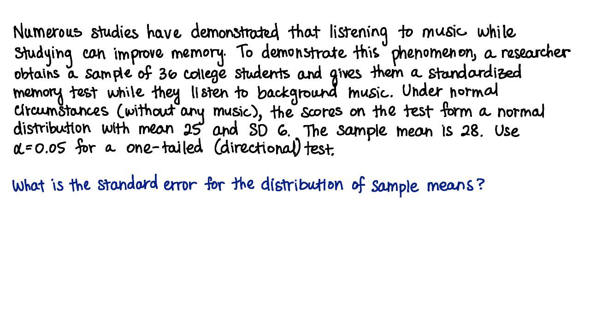

04. 4. 标准误差
- 标准误差
Start Quiz:

INSTRUCTOR NOTE:
许多研究表明，学习时听音乐可以改善记忆力。为了验证这个现象，一名研究者征集了 36 名大学生（样本），让他们一边听背景音乐，一边进行一个标准化记忆力测试。在没有音乐时，记忆力测试的分数为标准分布，均值为 25，标准偏差为 6。这次测试的样本均值为 28。使用 α = 0.05，单尾检验。
样本均值分布的标准误差是多少？